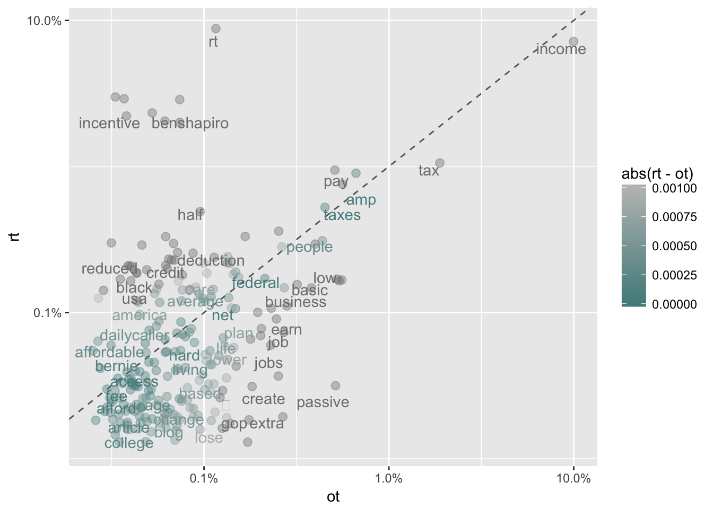
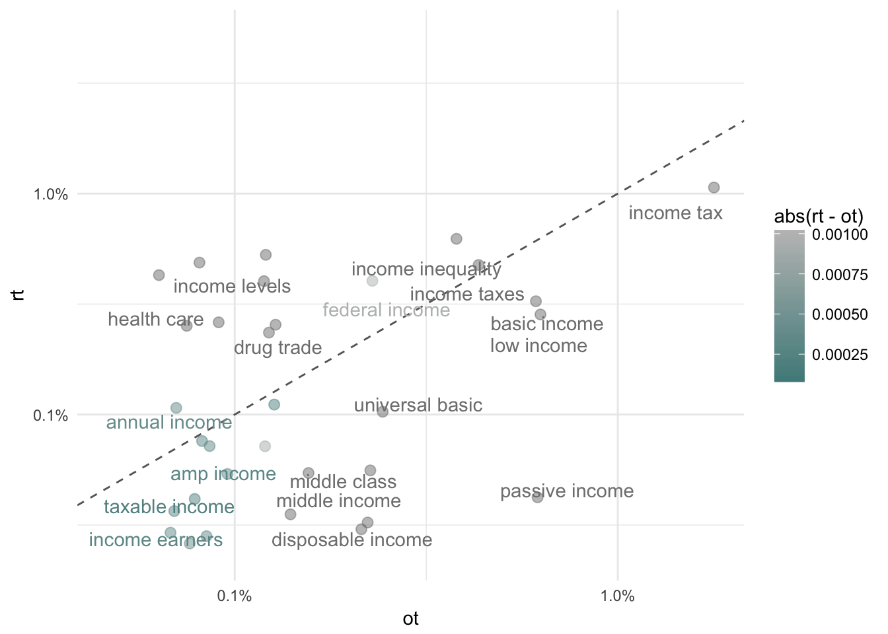
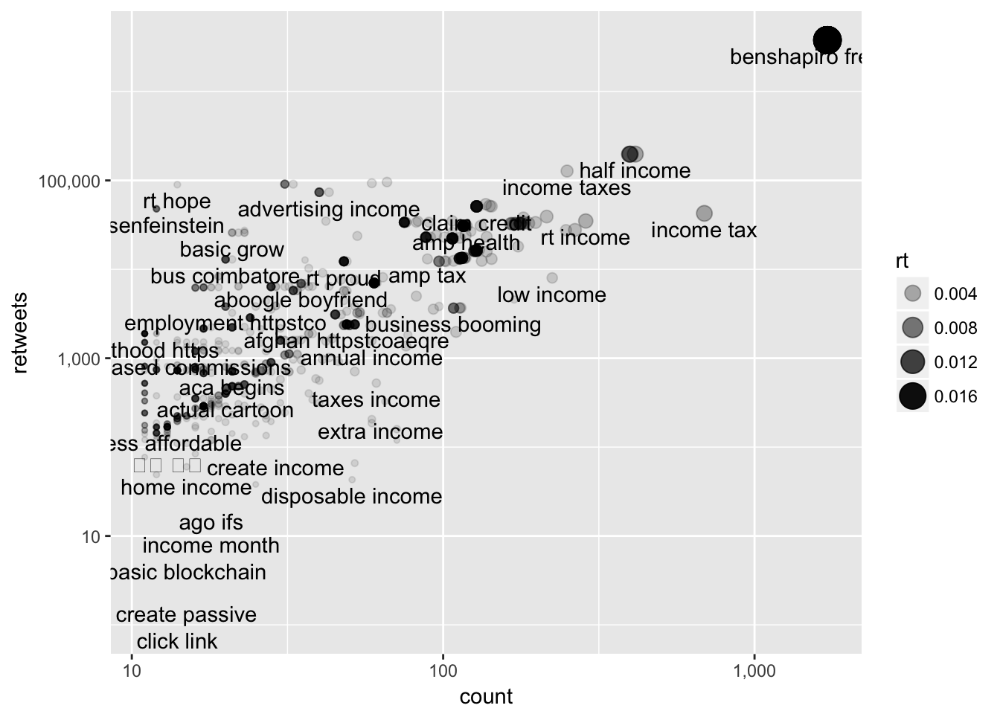

Lecture 12 Text Analysis
This lecture uses the following packages:
tidyverse
tidytext
twitteR
scales12.1 Data
12.1.1 Twitter
The content of recent Tweets can be downloaded using Twitter’s Application Pragramming Interface (API). We will make use of a package, twitteR, that is designed to make working with this API easier.
In class I will provide you with an API Key and API Secret that you can use. Outside of class, you will need to set up your own Twitter application at https://apps.twitter.com.
12.1.2 Setting up twitteR
Install the twitteR package:
install.packages("twitteR")Load the package:
library(twitteR)Finally, authenticate with twitter using the API Key, API Secret, Access Token, and Access Secret from the application for this course or your own. setup_twitter_oauth("API key", "API secret", "Access token", "Access secret")
12.1.3 Finding tweets
We’ll store 1000 tweets that contain income in rstatTweets:
income_tweets <- searchTwitter('income', n=10000)Each tweet is stored as a twitteR::status object. To make it easy to gather the data we want to analyze let’s create a function that will return all the columns in our soon to be created data frame.
simple_status <- function(status) {
status$toDataFrame()
}There are three ways we can use map_df to get the columns:
map_df(simple_status) # named function
map_df(function(x) x$toDataFrame()) # anonymous function
map_df(~ .$toDataFrame()) # formulaAll of those options do the same thing. They all return a data frame with one row representing a tweet. Let’s make use of the formula version to create our data frame:
library(tidyverse)
income_df <- income_tweets %>%
map_df(~ .$toDataFrame())
head(income_df)## text
## 1 RT @theamwu: "I'm hugely nervous... I wouldn't be able to manage on a reduced income." Michelle, Streets worker of 17 years\n\nhttps://t.co/z…
## 2 RT @DMR4USSenateCA: @RobertBentley76 @beinlibertarian @ToddHagopian @LarrySharpe @Liberty_Thunder @LPNational @adamkokesh @haydentiff @just…
## 3 Not excited about your #job? I'm looking for ppl who #dreambig. Join my #team & keep your job until your income is replaced. #entrepreneur
## 4 RT @3yeAmHe: Income is not wealth.\nIncome is not wealth.\nIncome is not wealth.\nIncome is not wealth.\nIncome is not wealth.\nIncome is not we…
## 5 6 способов получать пассивный доход от криптовалют https://t.co/MlPZxr6JRu https://t.co/Gi1V1NpW4R
## 6 RT @MazMHussain: 2032: Millions of Americans rendered superfluous by automation are pacified by President Zuckerberg basic income + VR head…
## favorited favoriteCount replyToSN created truncated
## 1 FALSE 0 <NA> 2017-10-30 03:00:42 FALSE
## 2 FALSE 0 <NA> 2017-10-30 03:00:41 FALSE
## 3 FALSE 0 <NA> 2017-10-30 03:00:37 FALSE
## 4 FALSE 0 <NA> 2017-10-30 03:00:31 FALSE
## 5 FALSE 0 <NA> 2017-10-30 03:00:29 FALSE
## 6 FALSE 0 <NA> 2017-10-30 03:00:25 FALSE
## replyToSID id replyToUID
## 1 <NA> 924833413231546368 <NA>
## 2 <NA> 924833408924217345 <NA>
## 3 <NA> 924833388971872256 <NA>
## 4 <NA> 924833365521551366 <NA>
## 5 <NA> 924833358835802112 <NA>
## 6 <NA> 924833340221480960 <NA>
## statusSource
## 1 <a href="http://twitter.com/#!/download/ipad" rel="nofollow">Twitter for iPad</a>
## 2 <a href="https://www.reddit.com/user/alllibertynews/m/libertynews" rel="nofollow">AllLibertyNews3</a>
## 3 <a href="https://ifttt.com" rel="nofollow">IFTTT</a>
## 4 <a href="http://twitter.com/download/iphone" rel="nofollow">Twitter for iPhone</a>
## 5 <a href="http://publicize.wp.com/" rel="nofollow">WordPress.com</a>
## 6 <a href="http://twitter.com/download/android" rel="nofollow">Twitter for Android</a>
## screenName retweetCount isRetweet retweeted longitude latitude
## 1 bsadams25 142 TRUE FALSE <NA> <NA>
## 2 alllibertynews 1 TRUE FALSE <NA> <NA>
## 3 LifeLeadership4 0 FALSE FALSE <NA> <NA>
## 4 pardonmeimrae 18 TRUE FALSE <NA> <NA>
## 5 EthereumC 0 FALSE FALSE <NA> <NA>
## 6 SnigdhChandra 52 TRUE FALSE <NA> <NA>12.2 Tidytext
The tidytext package helps us use all the tools in the tidyverse alongside text data. The key tool we’ll use here is unnest_tokens()
library(tidytext)
income_words <- income_df %>%
mutate(text = gsub("\n|[[:digit:][:punct:]]+", "", text)) %>%
unnest_tokens(word, text) %>%
anti_join(stop_words)
income_words %>%
count(word, sort = TRUE) %>%
head()## # A tibble: 6 x 2
## word n
## <chr> <int>
## 1 income 8523
## 2 rt 6237
## 3 httpstc 1751
## 4 service 1746
## 5 true 1746
## 6 benshapiro 1741Let’s compare the words in original tweets (ot) to those found in retweets (rt).
library(scales)
type_proportions <- income_words %>%
mutate(is_retweet = ifelse(isRetweet, "rt", "ot")) %>%
group_by(is_retweet) %>%
count(word, sort = TRUE) %>%
mutate(proportion = n / sum(n)) %>%
filter(n > 10) %>%
select(is_retweet, word, proportion) %>%
spread(is_retweet, proportion)
head(type_proportions)## # A tibble: 6 x 3
## word ot rt
## <chr> <dbl> <dbl>
## 1 aboogle NA 0.0004901068
## 2 aca NA 0.0003080672
## 3 access 0.0004209227 0.0004060885
## 4 accessible NA 0.0001960427
## 5 accident NA 0.0001820397
## 6 actual NA 0.0002660580type_proportions %>%
ggplot(aes(ot, rt, color = abs(rt - ot))) +
geom_abline(color = "gray40", lty = 2) +
geom_jitter(alpha = 0.4, size = 2.5, height = 0.1, width = 0.1) +
geom_text(aes(label = word), check_overlap = TRUE, vjust = 1.5) +
scale_x_log10(labels = percent_format()) +
scale_y_log10(labels = percent_format()) +
scale_color_gradient(limits = c(0, 0.001), low = "darkslategray4", high = "gray75")
12.3 N-grams
An n-gram is a sequence of \(n\) tokens. For fun with n-grams, check out Google’s Ngram Viewer.
Let’s compare bigrams (two-word n-grams) in our tweets across retweets (rt) and original tweets (ot).
bigrams <- income_df %>%
mutate(text = gsub("\n|[[:digit:][:punct:]]+", "", text)) %>%
unnest_tokens(word, text, token = "ngrams", n = 2) %>%
separate(word, c("word1", "word2"), sep = " ") %>%
filter(!word1 %in% stop_words$word & !word2 %in% stop_words$word) %>%
unite(word, word1, word2, sep = " ")
bigram_proportions <- bigrams %>%
mutate(is_retweet = ifelse(isRetweet, "rt", "ot")) %>%
group_by(is_retweet) %>%
count(word, sort = TRUE) %>%
mutate(proportion = n / sum(n)) %>%
filter(n > 10) %>%
select(is_retweet, word, proportion) %>%
filter(is_retweet != '') %>%
spread(is_retweet, proportion)
bigram_proportions %>%
ggplot(aes(ot, rt, color = abs(rt - ot))) +
geom_abline(color = "gray40", lty = 2) +
geom_jitter(alpha = 0.5, size = 2.5, height = 0.1, width = 0.1) +
geom_text(aes(label = word), check_overlap = TRUE, vjust = 1.5) +
scale_x_log10(labels = percent_format()) +
scale_y_log10(labels = percent_format()) +
scale_color_gradient(limits = c(0.0001, 0.001), low = "darkslategray4", high = "gray75") +
theme_minimal()
12.3.1 Skip N-grams
Skip n-grams are phrases of \(n\) kept words with at most \(k\) words that are skipped between each word that is kept. Suppose \(n=3\) and \(k=2\), with the input phrase “the rain in Spain falls mainly in the plain,” the output will be.
tokenizers::tokenize_skip_ngrams("the rain in Spain falls mainly in the plain", n = 3, k = 2)## [[1]]
## [1] "the spain in" "rain falls the" "in mainly plain"
## [4] "the in falls" "rain spain mainly" "in falls in"
## [7] "spain mainly the" "falls in plain" "the rain in"
## [10] "rain in spain" "in spain falls" "spain falls mainly"
## [13] "falls mainly in" "mainly in the" "in the plain"Let’s gather simple two-word skip ngrams with up to two skipped words between each kept word.
skipgrams <- income_df %>%
mutate(text = gsub("\n|[[:digit:][:punct:]]+", "", text)) %>%
unnest_tokens(word, text, token = "skip_ngrams", n = 2, k = 2) %>%
separate(word, c("word1", "word2"), sep = " ") %>%
filter(!word1 %in% stop_words$word & !word2 %in% stop_words$word) %>%
unite(word, word1, word2, sep = " ")retweet_counts <- skipgrams %>%
group_by(word) %>%
summarise(retweets = sum(retweetCount), count = n())
type_proportions <- skipgrams %>%
mutate(is_retweet = ifelse(isRetweet, "rt", "ot")) %>%
group_by(is_retweet) %>%
count(word) %>%
mutate(proportion = n / sum(n)) %>%
filter(n > 10) %>%
select(is_retweet, word, proportion) %>%
spread(is_retweet, proportion) %>%
merge(retweet_counts)
type_proportions %>%
ggplot(aes(count, retweets)) +
geom_point(aes(size = rt, alpha = rt)) +
geom_text(aes(label = word), check_overlap = TRUE, vjust = 1.5) +
scale_x_log10(labels = comma_format()) +
scale_y_log10(labels = comma_format()) 
12.4 Assignment
- Use searchTwitter to download tweets about another topic.
- Create a plot that compares word choice across android and iPhone devices using the following
mutate()expression.
mutate(type = case_when(
grepl("android", statusSource) ~ "android",
grepl("iPhone", statusSource) ~ "iPhone",
TRUE ~ "other"
))